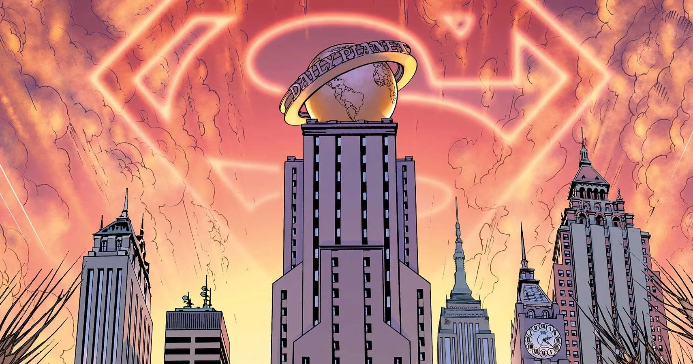

LOCATIONS
GOTHAM CITY
 Gotham City, or simply Gotham, is a fictional city appearing in American comic books published by DC Comics, best known as the home of the superhero Batman and his allies and foes. Created by writer Bill Finger and artist Bob Kane, the city was first identified as Batman's place of residence in Batman #4 (December 1940) and has since been the primary setting for stories featuring the character.
Gotham City, or simply Gotham, is a fictional city appearing in American comic books published by DC Comics, best known as the home of the superhero Batman and his allies and foes. Created by writer Bill Finger and artist Bob Kane, the city was first identified as Batman's place of residence in Batman #4 (December 1940) and has since been the primary setting for stories featuring the character.
Gotham City is traditionally depicted as being located in the U.S. state of New Jersey. Gotham's look and atmosphere was primarily influenced by New York City. Architect Hugh Ferriss’ designs also influenced the look and emotional feel of Gotham City, particularly in its later depictions. Finger chose the name "Gotham" so that the residents of any city could identify with it.
METROPOLIS

Metropolis is a fictional city appearing in American comic books published by DC Comics, best known as the home of Superman and his closest allies and some of his foes. First appearing by name in Action Comics #16 (Sept. 1939), Metropolis is depicted as a prosperous and massive city in the Northeastern United States, in close proximity to Gotham City. In recent years, it has been stated to be located in Delaware or New York
The co-creator and original artist of Superman, Joe Shuster, modeled the Metropolis skyline after Toronto, where he was born and lived until he was ten. Since then, however, the look and feel of Metropolis has been greatly influenced by New York City.
AL MAZRAH
Al Mazrah (Arabic: المزرح) is the capital city of the United Republic of Adal, a fictional country. The city is featured in Call of Duty: Modern Warfare II and serves as the main setting for the Special Ops and Ground War maps of Modern Warfare II. Al Mazrah is also the original battleground for Call of Duty: Warzone 2.0.
Infinity Ward began working on Al Mazrah in 2020 with other studios, and it became the biggest map ever made for Warzone.
AL MAZRAH
Bonus: The Function That Made 3D Games Possible
float Q_rsqrt( float number )
{
long i;
float x2, y;
const float threehalfs = 1.5F;
x2 = number * 0.5F;
y = number;
i = * ( long * ) &y;
i = 0x5f3759df - ( i >> 1 );
y = * ( float * ) &i;
y = y * ( threehalfs - ( x2 * y * y ) );
y = y * ( threehalfs - ( x2 * y * y ) );
return y;
}
Fast inverse square root, sometimes referred to as Fast InvSqrt() or by the hexadecimal constant 0x5F3759DF, is an algorithm that estimates 1÷√X, the reciprocal (or multiplicative inverse) of the square root of a 32-bit floating-point number
x in IEEE 754 floating-point format. This operation is used in digital signal processing to normalize a vector, such as scaling it to length 1. For example, computer graphics programs use inverse square roots to compute angles of incidence and reflection for lighting and shading. Predated by similar video game algorithms, this one is best known for its implementation in 1999 in Quake III Arena, a first-person shooter video game heavily based on 3D graphics. The algorithm only started appearing on public forums between 2002 and 2003.[note 1] Computation of square roots usually depends upon many division operations, which for floating point numbers are computationally expensive. The fast inverse square generates a good approximation with only one division step.
The algorithm accepts a 32-bit floating-point number as the input and stores a halved value for later use. Then, treating the bits representing the floating-point number as a 32-bit integer, a logical shift right by one bit is performed and the result subtracted from the number 0x5F3759DF (in decimal notation: 1,597,463,007), which is a floating-point representation of an approximation of √(2^127). This results in the first approximation of the inverse square root of the input. Treating the bits again as a floating-point number, it runs one iteration of Newton's method, yielding a more precise approximation.
ÎNAPOI LA PAGINA PRINCIPALĂ